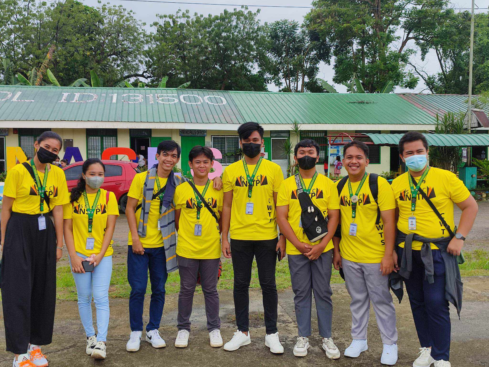
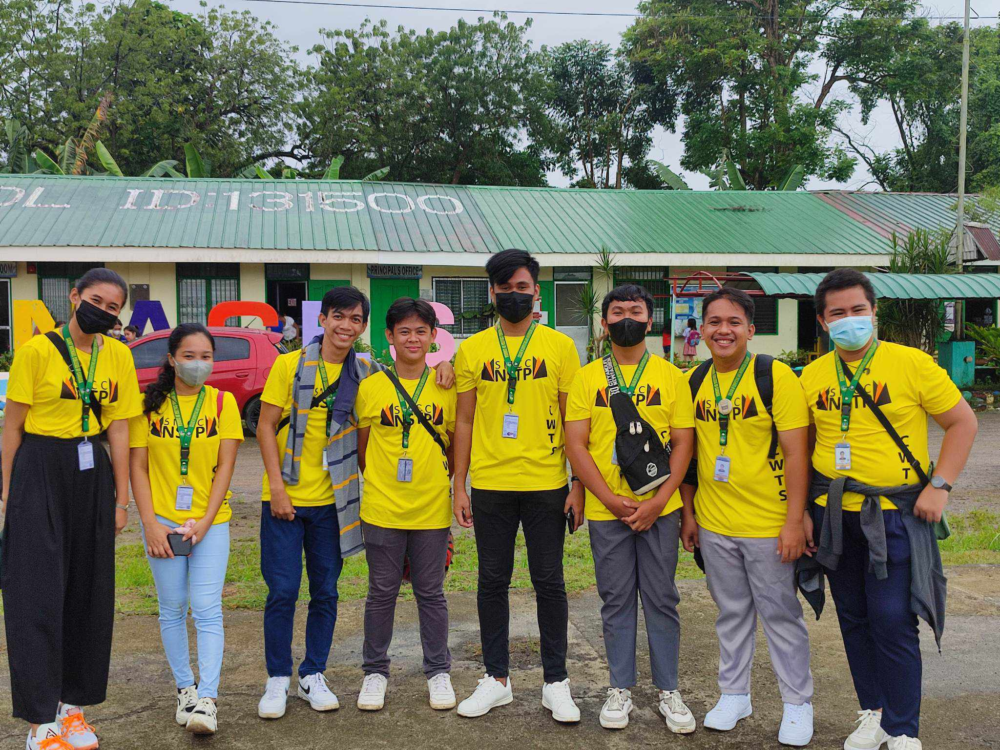

Date:January 29,2004
Sex: Female
Age:19 years old
Address:Purok 3, Guinabsan Buenavista Agusan del Norte
Status:Single
Studying at:Saint Michael College of Caraga
Date:January 29,2004
Sex: Female
Age:19 years old
Address:Purok 3, Guinabsan Buenavista Agusan del Norte
Status:Single
Studying at:Saint Michael College of Caraga
Hi, I am Mitchelle C. Taperla. I am the type of person who prioritises her family and friends. I love watching anime and playing different kinds of sports. I know how to draw, but I am not really good at it. I am hardworking, lovable, obedient, and forgetful. I am currently in a healthy relationship.I am a religious and conscientious individual.I also love cats and dogs, and I am currently studying at Saint Michael College of Caraga, taking the Bachelor of Information Technology. I am working hard to be the best version of myself and to help my family in the future.

My childhood memories are the best part of my life. I remember when I used to play outside with my friends, cousin, and sister. We played hide and seek, balay-balay, tumba lata, jacks, marbles, and many more. I used to be late going home because it was too fun and enjoyable.Every memory is etched in my heart and mind for eternity.

My life as a teenager is also memorable due to my friends , who are able to make me happy and help me explore new things. We enrolled in the same school, and we are also classmates. When it was time to go home, we used to sing on the road, celebrating each other's birthdays. We experience challenges in our friendship, but we still stay together. My friends and familyares my foundation of strength and happiness

Aduldhood is a very crucial stage in one’s life. This is the climax of physical and health processes. This is the point in life when we make plans of our futures. It is the time when we think of what life will be like as an adult and make plans for the future. Most importantly, it is when we lay the starting point for developmental changes that we will undergo throughout our lives.

Saint Michael College of Caraga is the overall champion in the PRISAA 2023. This is a memorable day to me because it is my first time joining in such a big event and with the help of everyone we be able to conquer any challenges which lead us to become the representative in our homeland. .

Music is one of the essential components in our lives. Music gives us entertainment and relaxation.I love listening to music because it gives me comfort and peace.

Dance is a language beyond words, expressing that for which we have no words.I love dancing because it gives mt happiness and energy. It also help me become physically fit.


"Green is the prime color of the world, and that from which its loveliness arises." ~ Pedro Calderon de la Barca. I chose green because represent as new beginning and growth. It also signifies renewal and abundance.
horror film as representing "disturbing and dark subject matter, seeking to elicit responses of fear, terror, disgust, shock, suspense, and, of course, horror from their viewers."

a style of animation originating in Japan that is characterized by stark colorful graphics depicting vibrant characters in action-filled plots often with fantastic or futuristic themes.

involving conflicts between science and technology, human nature, and social organization in futuristic or fantastical settings, created in cinema through distinctive iconographies, images, and sounds often produced by means of special effects technology.


 
